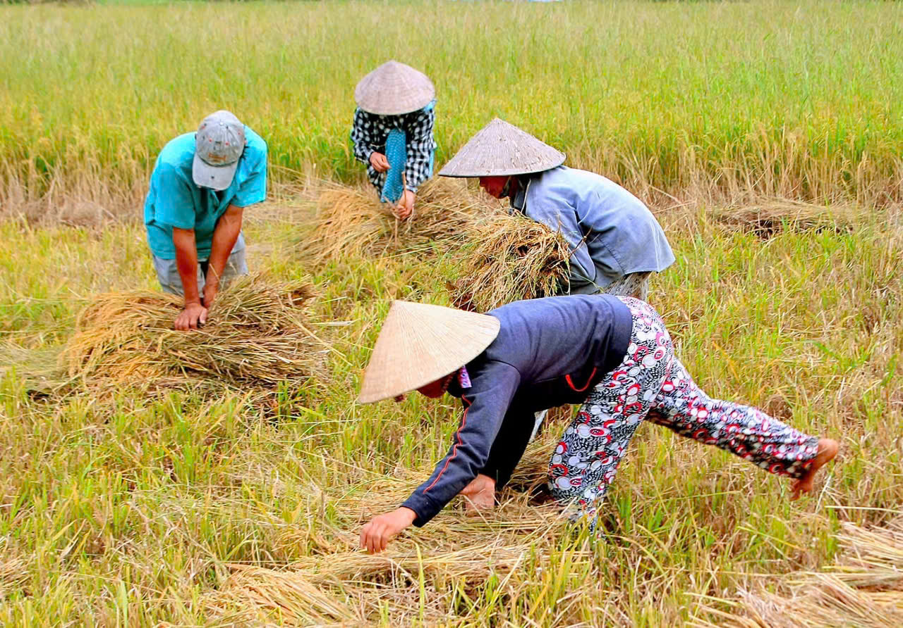

🧘
Tâm an
Dành vài phút mỗi ngày để thở chậm, quan sát cảm xúc và trở về với hiện tại.
Ăn chay – Sống xanh – Yêu thương động vật – Cùng nhau tạo nên một cuộc sống bình an.
Một bữa ăn lành mạnh, một hơi thở sâu, một hành động tử tế. Khi thay đổi từng ngày, chúng ta tạo nên một cuộc sống bình an hơn.
Dành vài phút mỗi ngày để thở chậm, quan sát cảm xúc và trở về với hiện tại.
Ưu tiên rau củ, đậu, hạt, ngũ cốc nguyên hạt và những món ăn thực vật đa dạng.
Học cách sống nhẹ nhàng với bản thân, con người, muôn loài và môi trường.
“Khi chúng ta sống tử tế hơn với muôn loài,— Healing Xanh
thế giới quanh ta cũng trở nên dịu dàng hơn.”
Không cần hoàn hảo. Hãy bắt đầu bằng một bữa ăn xanh hơn mỗi ngày.
Gợi ý đơn giản cho bữa ăn thực vật:
Những việc nhỏ nhưng khi nhiều người cùng làm sẽ tạo ra thay đổi lớn.
Giảm chai nhựa dùng một lần.
Mang túi vải khi mua sắm.
Tăng bữa ăn có nguồn gốc thực vật.
Tắt thiết bị khi không sử dụng.
Thêm một mảng xanh vào không gian sống.
Đi bộ hoặc sử dụng phương tiện công cộng khi phù hợp.
Ưu tiên sản phẩm bền, dùng lâu và ít bao bì.
Chia sẻ một hành động xanh với người khác.
Động vật cũng cảm nhận được sự an toàn, đau đớn và tình yêu thương.
Đối xử dịu dàng và có trách nhiệm.
Tôn trọng nhu cầu và không gian của chúng.
Hướng tới lựa chọn nhân ái hơn mỗi ngày.
Chọn ít nhất 3 việc. Không áp lực — chỉ cần bắt đầu.
Ra ngoài, hít thở và quan sát cây cối xung quanh.
Thực hiện một bữa ăn thuần thực vật nhiều màu sắc.
Giúp một người, chăm sóc một con vật hoặc bảo vệ một mầm cây.
